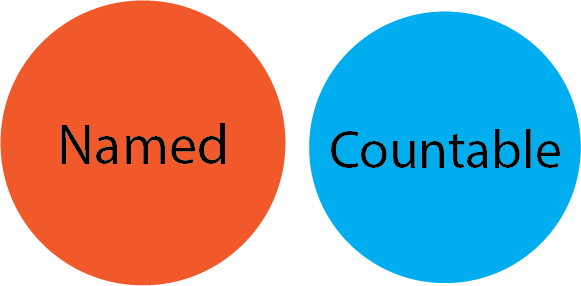

Fundamentos de TypeScript
Sobre mim
- Alan Jhonnes
- Arquiteto de Software na MJV
- 4+ anos de experiência com Typescript
TypeScript
-
Linguagem - Javascript Superset - Adiciona sistema de tipos
-
Compilador - Compila Typescript e Javascript para um dialeto ES de escolha - Altamente configurável
-
Language server - Provê funcionalidades de IDE para diversos editores de texto
Sistema de tipos
- Estruturado
- Developer Experience
- Documentável
- Flexível
Tipos básicos e primitivos
string
number
boolean
object
function
array
Tipos especiais
Definindo Tipos
Sistema de tipos estrutural
Typescript é o seu Javascript com tipos
Pensando em Conjuntos

Modificadores
Derivando tipos
- Generics
- Funções para tipos
- Parâmetros de tipos
Criando tipos indexados
Iterando em propriedades
Análise de tipos por fluxo
Tipos Condicionais
Combinando conceitos
- Tipos Literais
- Unions
- Generics
- Combinações
- Analise de tipos por fluxo
- Tipos condicionais